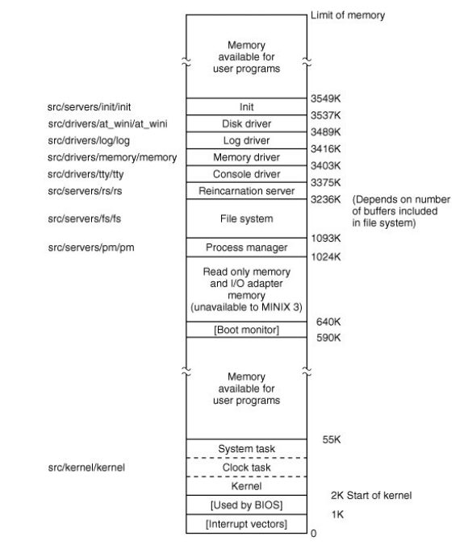

Full path to C Language source code on standard intel based platform is "/usr/src/"
Makefile controls the compilation of files in its directory and also directs compilation of files in one or more subdirectories. Make manages efficient compilation of programs involving multiple source files. It also tests previously compiled modules to see if they are up to date and re-compiles whose source files have been modified.
All part of "/src/" tree can be relocated since makefile in each directory uses a relative path to C directories.
During compilation every makefile expects to find header files in "/usr/include". "/usr/src/tools/Makefile" expects to find master copy of header files in "/usr/src/include". Before recompiling the system, the entire "/usr/include" directory is deleted and "/usr/src/include" is copied to "/usr/include". This is done to keep all files needed in development of minix3 in one place.
include/ contains a number of posix standard files. Following are the subdirectories of include/:
src/ directory also contains following subdirectories:
/src/servers contains following subdirectories:
src/test/ - is used to test a newly compiled MINIX3 System.
src/command/ - contains source code for programs like cat, cp, date, ls, pwd etc.
src/kernel/const.h - Defines the constants used in the Kernel
src/servers/pm/const.h - Defines constants used by process manager
The kernel, drivers and servers are independently compiled and linked programs as listed on the left in following image. 
Minix 3 consists of totally independent programs that communicate only by message passing. The procedures that the three pieces of os have in common are in /src/lib. The modular structure helps in making changes in any part of the operating system without having to make change in any other part.
A detailed explanation about implementation of process manager is given in the book "Operating system design and Implementation", Section - 2.
Operating System Design and Implementation, Third Edition By Andrew S. Tanenbaum and Albert S. Woodhull